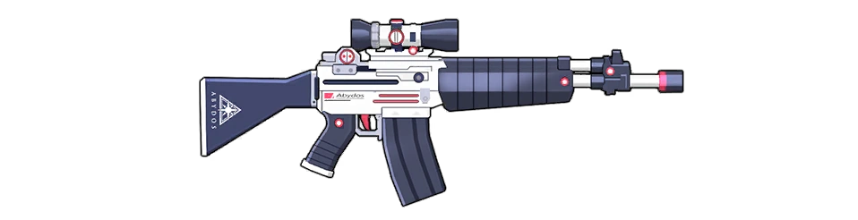
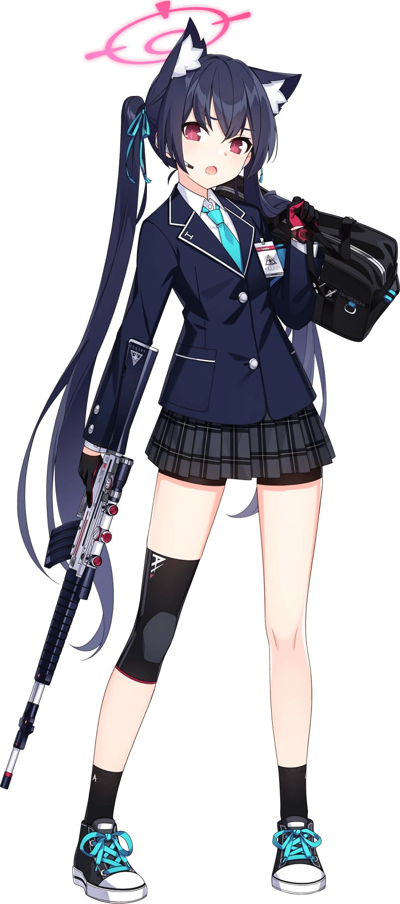
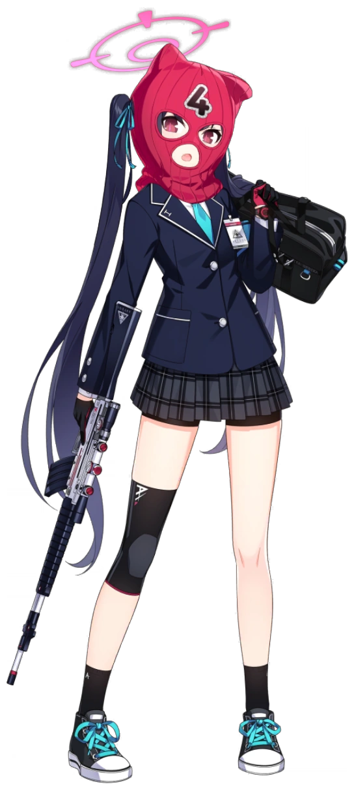
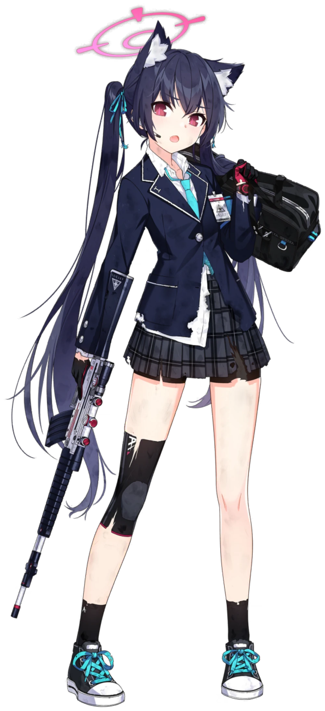
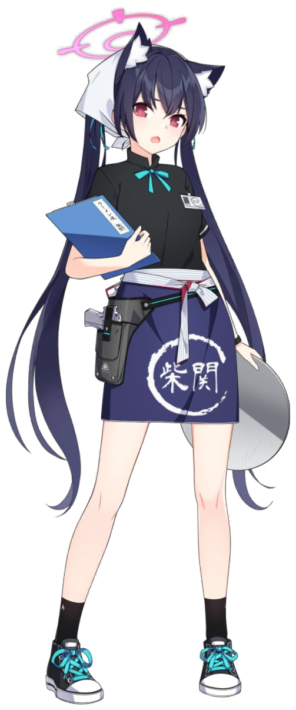
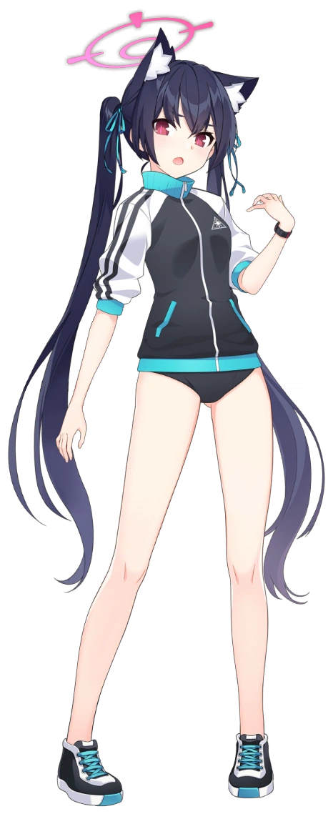
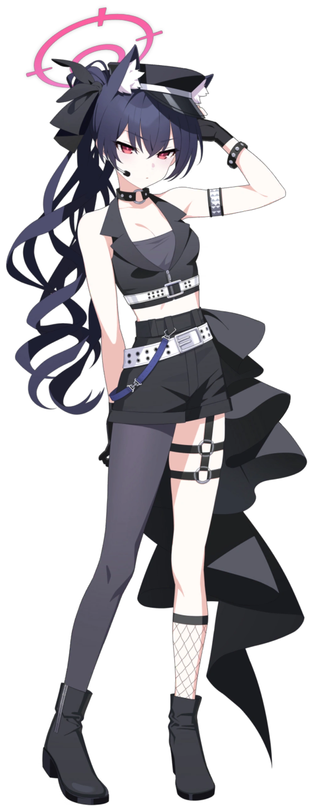

<!DOCTYPE html>
<html>
<head>
<title>SERIKA</title>
<meta charset="UTF-8">
<link rel="stylesheet" href="ParSep.css">


<center> <h1>This is subpage dedicated to Kuromi Serika</h1> </center>
</head>

<body class="abydos">
<center> <h2>Credits to Biazon FROM bsit - 21</h2> </center>

<hr>

<center> <hr>

<a href="LANDING_PAGE.html">Home</a> |
<a href="Ayane.html">Ayane</a> |
<a href="Shiroko.html">Shiroko</a> |
<a href="SHIROKO_TERROR1.html">Terror</a> |
<a href="Nonomi.html">Nonomi</a> |
<a href="Hoshino.html">Hoshino</a>|
<a href="Yume.html">Yume</a>|


<hr> </center>

<div class="text-content">

<h2>Kuromi Serika</h2>
<p>Kuromi Serika (黒見セリカ) is one of the students studying in Abydos High School, and also wields an Assault Rifle</p>
<p>She is a member of the Countermeasures Committee.</p>

<h2>INTRODUCTION</h2>
<p>A Treasurer working for the task force at the Countermeasure Committee for Abydos High. Kuromi Serika has difficulty expressing her true emotions. Often short-tempered, but in reality, is kind. She works part-time at Shibaseki Ramen, a restaurant, using her wage to pay Abydos High’s debt.</p>

<h2>Personality</h2>
<p>Often short-tempered and angry, but hardworking and kind. She often invites Sensei to participate in her multiple part-time jobs.</p>

<h2>Appearance</h2>
<p> She has navy blue hair tied in long twintails reaching to her legs. She wears bright cyan ribbons and a speaker earpiece. She has dark blue cat ears. She has reddish-pink eyes. She has long, vertical pink pupils. She has a canine tooth/cute little fang Serika's halo has a red crosshair floating on top of her head with arrows on the outer ring.</p>

<h2>Uniform</h2>
<p>Serika wears a neat and formal Abydos school uniform, featuring a buttoned dark navy blue blazer with thin white piping along the lapels, collar, and pockets. On the left breast pocket, her Abydos student identification access badge is clipped.

<p>Underneath the blazer, she wears a crisp white collared dress shirt paired with a vibrant cyan-blue tie. Her right sleeve is uniquely fitted with a matching dark navy blue armband/cuff protector displaying the Abydos logo. She wears a dark gray, pleated plaid skirt with subtle white grids, worn over short black safety shorts underneath.</p>

<p>Her hands are covered with fingerless black tactical gloves that feature a red color pattern on the palms. For her lower outfit, she wears a distinctive black knee compression sleeve on her right leg with a tiny red stripe at the bottom, short black ankle socks branded with a white 'A' logo, and a pair of black and white high-top sneakers with vibrant cyan shoelaces.</p>

<p>Item: She has a dark pink bank robber's hat, a four in the middle.</p>

<p>Shibaseki version: She was wearing a black shirt and a blue bow tie, She has her employee ID badge on the left side of her shirt. She wore a blue apron around her waist with the restaurant's logo on it, along with a holster containing a pistol on her right side. She was also wearing a headscarf, the kind worn by restaurant staff.</p>

<p>Gym version: She was wearing a black sports jacket with blue pockets, white sleeves and black trim. The hem, collar, and sleeves of the shirt are blue, the Abydos logo is on the left side of the shirt. She wore simple black athletic underwear and a black watch with a red bezel on her wrist. Black and white shoes with blue laces, white sole, and cyan center.</p>

<p>Idol version: She wore a black sleeveless top with a deep V-neck and a grey bandeau top underneath. A white belt cinched below her bust. Below, she wore high-waisted black shorts with a wide black leather belt and a perforated white belt hanging loosely to one side, accompanied by a blue chain on her right hip. An asymmetrical, layered black fabric cascaded <br> down her back. On her left hand, she wore a stylish black and white cuff; on her right, a thin studded bracelet. Her right leg wore dark grey thigh-high stockings, while her left leg was bare except for a black thigh-high belt and long black fishnet stockings. She wore ankle boots. On her head, she wore a black officer's cap with a <br> white horizontal stripe, and a black necklace around her neck.</p> 


<h2>Firearm</h2>
<p> She uses a two-tone Beretta AR-70/223 assault rifle with a dark blue flash-hider, gas block, stock, handguard, and pistol grip. The receiver, barrel, and gas tube is painted white. It is equipped with a Vortex Crossfire II Riflescope with a red lens. The Abydos insignia is engraved on the stock while the school's name is imprinted on the receiver just above the grip.</p>

</div

<h2>Images of Serika (Sprites + Gun)</h2>









<a href="https://bluearchive.fandom.com/wiki/Okusora_Ayane">
    bluearchive.fandom.com
</a>

</body>
</html>


